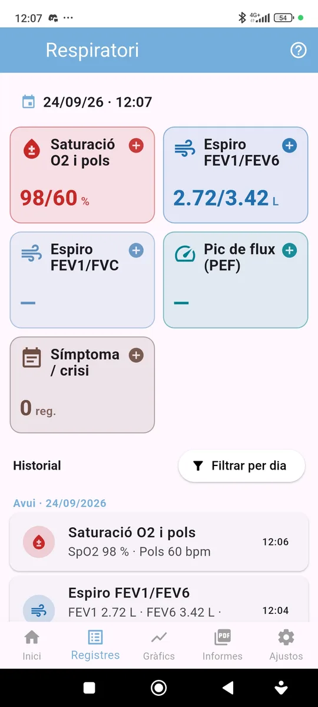
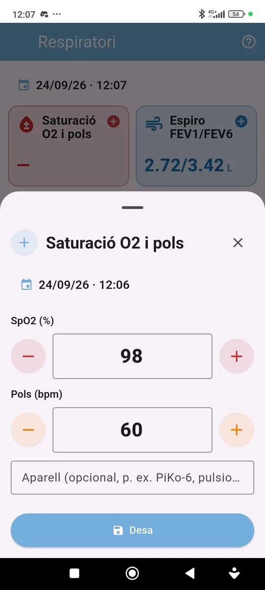

Mòdul Respiratori
Manual Respiratori
Guia pràctica per registrar saturació d’oxigen, espirometries i pic de flux, sigui quin sigui l’aparell que utilitzis.

Què permet registrar?
Com fer un registre

1. Una sola fitxa per lectura
Prem la targeta de la mesura. Els valors que dona l’aparell en una mateixa lectura s’entren junts: per exemple, SpO2 i pols del pulsioxímetre, o FEV1 i FEV6 de l’espiròmetre. La ràtio (FEV1/FEV6 o FEV1/FVC) es calcula automàticament.
2. Zona de color (opcional)
Si el teu espiròmetre mostra una zona de color (verd, groc o vermell), la pots anotar a la mateixa fitxa.
3. Historial
Les targetes mostren la darrera lectura i l’historial les agrupa per dies. Prem un registre per modificar-lo o eliminar-lo.
Gràfics i informes
Evolució
Als gràfics cada valor té la seva línia. En espirometria es mostra la millor lectura de cada període; en saturació i pols, la mitjana.
L’informe mostra un resum (millor lectura en espirometria, mitjana en saturació i pols), l’última lectura i la llista de lectures amb data, hora, valors, zona i aparell. El pots exportar en PDF o CSV.